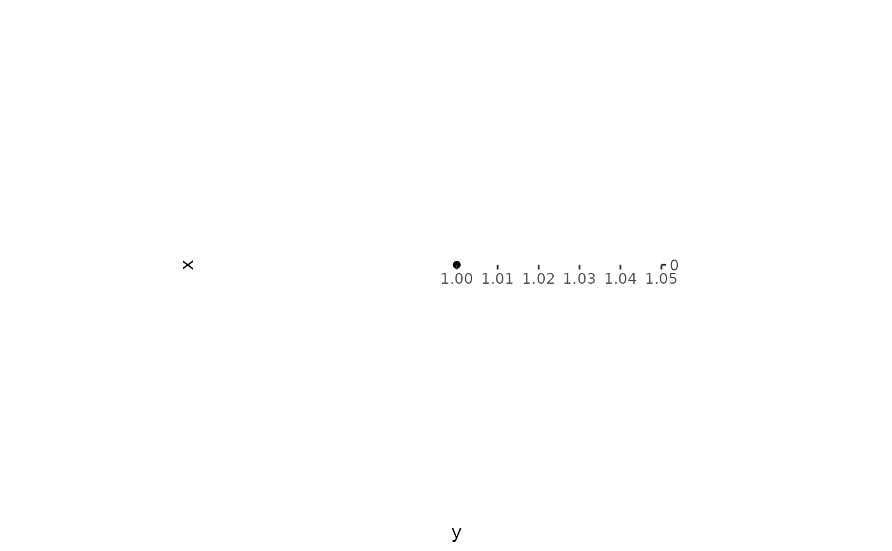

coord_circos() draws the panel in polar coordinates: x is the radius,
y is the angle in radians. coord_arc() is the linear counterpart –
nodes sit on a line and links bulge to one side. ggcircos() installs
the right one for you; you rarely need to call these directly.
Arguments
- theta
Which aesthetic holds the angle. Only
"y"is supported.- clockwise
Direction of increasing
thetaon screen:TRUEputstheta = 0at 12 o'clock and runs clockwise,FALSEruns counter-clockwise.- start
Angle (radians) of
theta = 0on the ring, measured clockwise from 12 o'clock.ggcircos()passes the layout'sstarthere, so the first node lands where the layout says it does.- clip
Should the panel be clipped to its range?
"off"by default so that bulging links are not cut off.- r.axis
Draw the radial axis.
FALSEby default: a radius has no physical meaning here.- expand, limits, ...
Passed on to
ggplot2::coord_radial()orggplot2::coord_cartesian(). A plain numericlimitsis read as the angle range:coord_circos(limits = c(0, 2 * pi))says "the angle axis is the whole circle", which is what a hand-built plot needs (seevignette("from-circlize")and the layout-as-data section ofvignette("tracks")).- direction
Rejected on purpose: the
coord_polar()spelling forclockwise. Present in the signature so that old code gets a classed error instead of "unused argument".- xlim, ylim
Panel ranges for
coord_arc().
Details
The circular coordinate is built on ggplot2::coord_radial(): the radius
axis is suppressed (a radius has no physical meaning here), the angle is
taken from y, and coord_circos() maps its own arguments onto the
fields CoordRadial expects. Labels are rotated with the screen angle
the coordinate itself reports, so they stay attached to the circle for
any clockwise setting.
coord_arc() locks the radius unit to the angle unit
(ratio = 1), because the linear layout has no circle to borrow a scale
from: without it a chord spanning half a turn is drawn as a tall loop
instead of an arc. The angle axis covers a whole turn, so this layout
wants a tall device (roughly 1:2 or narrower); in a square device
the panel becomes a narrow column.
Examples
# normally installed for you by ggcircos()
p <- ggplot2::ggplot(data.frame(x = 1, y = 0), ggplot2::aes(x, y)) +
ggplot2::geom_point() +
coord_circos()
p
#> Warning: The angle scale no longer spans `[0, 2*pi]`: labels and slots will sit in the
#> wrong place.
#> ℹ Leave the y scale of a ggcircos plot alone; the layout already fixed it to
#> `c(0, 2*pi)`.
